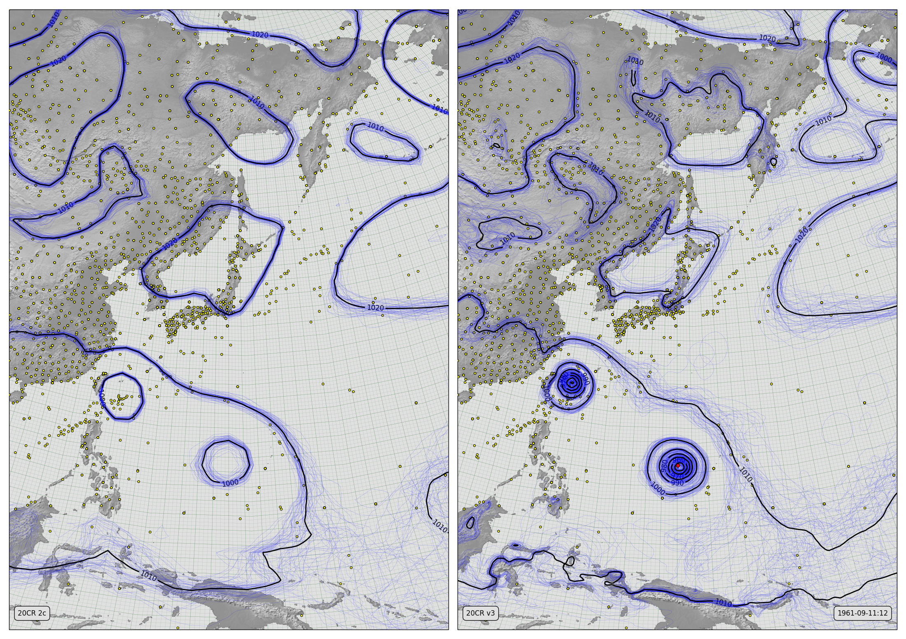

Super-Typhoon Nancy (1961)¶
See also

{kind=link}
MSLP Contours for v2c (left) and v3 (right)
The thin blue lines are mslp contours from each of 56 ensemble members (all members for v2c, the first 56 members for v3). The thicker black lines are contours of the ensemble mean. The yellow dots mark pressure observations assimilated while making the field shown. The red dots are the IBTRACS best-track observations for Typhoon Nancy (these were missing from the v2c observations database, but have been restored for v3).
Download the data required:
import IRData.twcr as twcr
import datetime
dte=datetime.datetime(1961,9,1)
for version in ('2c','4.5.1'):
twcr.fetch('prmsl',dte,version=version)
twcr.fetch_observations(dte,version=version)
Make the figure:
# US region weather plot
# Compare pressures from 20CRV3 and 20CRV2c
import math
import datetime
import numpy
import pandas
import iris
import iris.analysis
import matplotlib
from matplotlib.backends.backend_agg import \
FigureCanvasAgg as FigureCanvas
from matplotlib.figure import Figure
import cartopy
import cartopy.crs as ccrs
import Meteorographica as mg
import IRData.twcr as twcr
# Date to show
year=1961
month=9
day=11
hour=12
dte=datetime.datetime(year,month,day,hour)
# Landscape page
fig=Figure(figsize=(22,22/math.sqrt(2)), # Width, Height (inches)
dpi=100,
facecolor=(0.88,0.88,0.88,1),
edgecolor=None,
linewidth=0.0,
frameon=False,
subplotpars=None,
tight_layout=None)
canvas=FigureCanvas(fig)
# US-centred projection
projection=ccrs.RotatedPole(pole_longitude=320, pole_latitude=56)
scale=30
extent=[scale*-1,scale,scale*-1*math.sqrt(2),scale*math.sqrt(2)]
# Two side-by-side plots
ax_2c=fig.add_axes([0.01,0.01,0.485,0.98],projection=projection)
ax_2c.set_axis_off()
ax_2c.set_extent(extent, crs=projection)
ax_3=fig.add_axes([0.505,0.01,0.485,0.98],projection=projection)
ax_3.set_axis_off()
ax_3.set_extent(extent, crs=projection)
# Background, grid and land for both
ax_2c.background_patch.set_facecolor((0.88,0.88,0.88,1))
ax_3.background_patch.set_facecolor((0.88,0.88,0.88,1))
mg.background.add_grid(ax_2c)
mg.background.add_grid(ax_3)
land_img_2c=ax_2c.background_img(name='GreyT', resolution='low')
land_img_3=ax_3.background_img(name='GreyT', resolution='low')
# Add the observations from 2c
obs=twcr.load_observations_fortime(dte,version='2c')
mg.observations.plot(ax_2c,obs,radius=0.15)
# Highlight the Hurricane obs
obs_h=obs[obs.Name=='NANCY']
if not obs_h.empty:
mg.observations.plot(ax_2c,obs_h,radius=0.25,facecolor='red',
zorder=100)
# load the 2c pressures
prmsl=twcr.load('prmsl',dte,version='2c')
# Contour spaghetti plot of ensemble members
mg.pressure.plot(ax_2c,prmsl,scale=0.01,type='spaghetti',
resolution=0.25,
levels=numpy.arange(870,1050,10),
colors='blue',
label=False,
linewidths=0.1)
# Add the ensemble mean - with labels
prmsl_m=prmsl.collapsed('member', iris.analysis.MEAN)
mg.pressure.plot(ax_2c,prmsl_m,scale=0.01,
resolution=0.25,
levels=numpy.arange(870,1050,10),
colors='black',
label=True,
linewidths=2)
# 20CR2c label
mg.utils.plot_label(ax_2c,'20CR 2c',
facecolor=fig.get_facecolor(),
x_fraction=0.02,
horizontalalignment='left')
# V3 panel
# Add the observations from v3
obs=twcr.load_observations_fortime(dte,version='4.5.1')
mg.observations.plot(ax_3,obs,radius=0.15)
# Highlight the Hurricane obs
obs_h=obs[obs.Name=='NANCY']
if not obs_h.empty:
mg.observations.plot(ax_3,obs_h,radius=0.25,facecolor='red',
zorder=100)
# load the V3 pressures
prmsl=twcr.load('prmsl',dte,version='4.5.1')
# Contour spaghetti plot of ensemble members
# Only use 56 members to match v2c
prmsl_r=prmsl.extract(iris.Constraint(member=list(range(0,56))))
mg.pressure.plot(ax_3,prmsl_r,scale=0.01,type='spaghetti',
resolution=0.25,
levels=numpy.arange(870,1050,10),
colors='blue',
label=False,
linewidths=0.1)
# Add the ensemble mean - with labels
prmsl_m=prmsl.collapsed('member', iris.analysis.MEAN)
mg.pressure.plot(ax_3,prmsl_m,scale=0.01,
resolution=0.25,
levels=numpy.arange(870,1050,10),
colors='black',
label=True,
linewidths=2)
mg.utils.plot_label(ax_3,'20CR v3',
facecolor=fig.get_facecolor(),
x_fraction=0.02,
horizontalalignment='left')
mg.utils.plot_label(ax_3,
'%04d-%02d-%02d:%02d' % (year,month,day,hour),
facecolor=fig.get_facecolor(),
x_fraction=0.98,
horizontalalignment='right')
# Output as png
fig.savefig('V3vV2c_Typhoon_Nancy_%04d%02d%02d%02d.png' %
(year,month,day,hour))